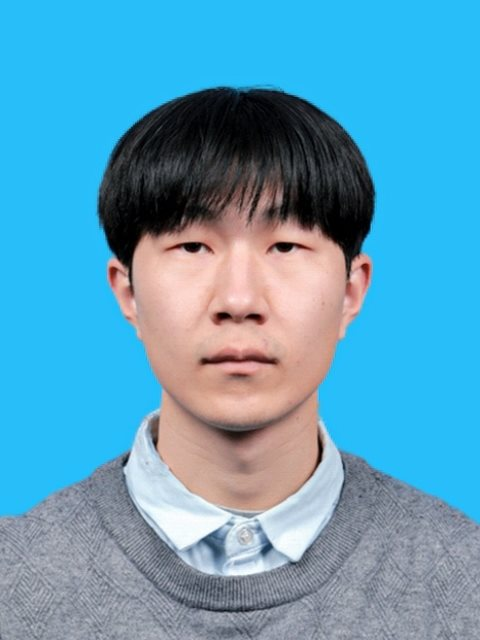

|
 |
Xiaoyi LiuIncoming Ph.D. Student Department of Electronic Engineering, Tsinghua University |
I received my B.S. degree in Electronic Engineering from the Department of Electronic Engineering at Tsinghua University in 2026. I will join the Department of Electronic Engineering at Tsinghua University as a Ph.D. student in Fall 2026, under the supervision of Prof. Xueqing Li and Prof. Bei Yu. My research interests include Electronic Design Automation, Computer Architecture, and Efficient AI.
Besides my research, I am also interested in sports and have been playing soccer for several years.
| Department of Electronic Engineering, Tsinghua University | Aug. 2022 – Jun. 2026 |
| B.S. in Electronic Engineering, Outstanding Graduate (Bachelor's) | |
| Advisor: Prof. Huazhong Yang |
| First Prize, 39th National College Student Physics Competition in Some Areas (Group A, Non-Physics Majors) | 2023 | |
| Excellence Award, National Student Computer System Capability Challenge (Loongson Cup) | 2024 | |
| Second Prize, 26th Hardware Design Competition | Tsinghua University | 2023 |
| Tsinghua University Comprehensive Excellence Scholarship (Friends of Tsinghua - Mingde Zhizhi Scholarship) | Tsinghua University | 2024 |
| Tsinghua University Comprehensive Excellence Scholarship (Friends of Tsinghua - Guangzhou Pharmaceutical Holdings Scholarship) | Tsinghua University | 2025 |
| Outstanding Graduate (Bachelor's) | Tsinghua University | 2026 |
| National Scholarship | Ministry of Education of China | 2025 |